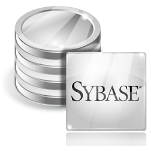
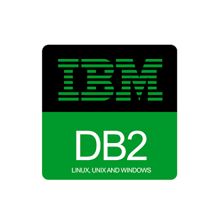

Виды программного обеспечения баз данных
Компьютерное программное обеспечение и компьютерные технологии изменили способ, которым мы делаем наш бизнес, в эпоху продвинутых технологий. Программное обеспечение баз данных может помочь нам обрабатывать большие объемы данных более эффективно. В этой статье я подробно опишу типы программного обеспечения баз данных. Программное обеспечение баз данных используется в больших масштабах в секторе информационных технологий из-за своих различных целей. В первую очередь, прежде чем мы попытаемся понять различные типы программного обеспечения баз данных, и их преимущества, мы должны знать, что такое программное обеспечение базы данных. Программное обеспечение базы данных Термин база данных – означает структурированный и систематический сбор данных. Простыми словами программное обеспечение базы данных, это основные типы прикладного программного обеспечения, используемого для этих целей. Прикладное программное обеспечение - это программное обеспечение, которое будет непосредственно использовать компьютерные мощности для решения поставленной задачи. Зачастую, прикладное программное обеспечение ориентировано только на одной задаче, такой как видео-файлы, электронные таблицы, текстовые редакторы. Самая лучшая часть программного обеспечения баз данных (прикладного программного обеспечения) заключается в том, что она может легко манипулировать графикой, цифрами и текстом. Программное обеспечение базы данных является отличным инструментом в организации данных и содействии использованию баз данных при заполнении данных успешных операций. Программное обеспечение баз данных помогает сэкономить время, выполняя свои задачи быстро и качественно. Повышение функции отслеживания и ведение учета, основные выгоды от программного обеспечения баз данных. Типы программного обеспечения баз данных Oracle Oracle является наиболее предпочтительным программным обеспечением базы данных, и это видно из того факта, что ПО Oracle является лидером на рынке программного обеспечения баз данных с долей рынка в 50%. Это результат постоянных инноваций и высоких достижений системы управления реляционными базами данных (СУРБД), которая полезна в хранении данных в виде файлов и таблиц. Кроме того, в ней есть функция восстановления данных, которая является очень полезной для восстановления проблемных и поврежденных баз данных. SQL сервер Если вы ищете реляционную модель сервера базы данных, то SQL сервер от Microsoft будет лучшим выбором для вас. Среди функций сервера SQL, управление буфером является ключевой. С помощью этой программы, вы можете использовать буфер страниц оперативной памяти и снизить нагрузку на диск. Количество страниц, которые будут кэшироваться в памяти будет зависеть от памяти SQL-сервера. С помощью записи в log, SQL сервер будет выполнять транзакции и каждая запись в журнале, будет соответствует фиксированному регистрационному номеру. Причина, почему SQL-сервер используется для бизнеса это его способность, позволяющая клиентам использовать одну и ту же базу данных одновременно. Используя эту способность, проект может быть завершен в меньшее время, а также с высоким уровнем точности. Sybase Sybase, которая является продуктом компания SAP, использует реляционные базы данных и хранилищ данных для систематического управления полезной информацией или данными. Sybase Replication Server, Advantage Database Server и Adaptive Server Enterprise являются основными продуктовыми направлениями компании в области управления данными. Если ваша компания нуждается в аналитике продукции, то Sybase Complex Event Processing (обработка сложных событий) и Sybase IQ (интелектуальная) являются теми продуктами, которые вы должны выбрать. С другой стороны, для мобильных товаров, у вас есть другие варианты, такие как Afaria, GRX 365, Sybase Unwired Platform (SUP) и SMS Ad Exchange. IBM DB2 IBM DB2 является сервером базы данных компании IBM, который работает на серверах Windows, Linux, IBM i, Unix и z/OS. Технические характеристики IBM DB2 позволяют предположить, что он имеет хранение XML-данных, поддерживает XQuery и SQL и может легко управляется из командной строки. IBM DB2, который был выпущен в 1983 году, был написан на языках программирования С и С ++. IBM DB2 рассматривается как лучший сервер базы данных для обработки ошибок и в целях управления. Итак, это были основные типы программное обеспечение баз данных, которые вы можете использовать, чтобы сделать Вашу компанию технологически продвинутой. Использование этих программ позволит вам соблюдать жесткие сроки и выполнить ожидания клиента, которые необходимы, чтобы удержаться на плаву в условиях жесткой конкуренции.